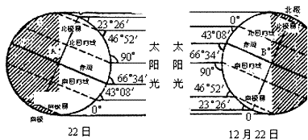
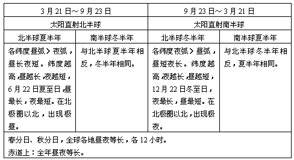
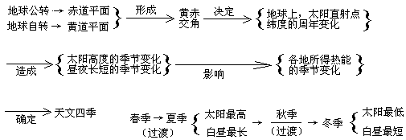
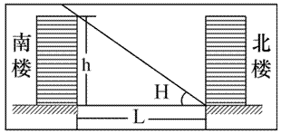
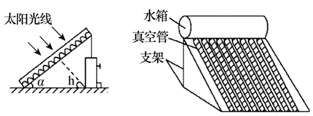
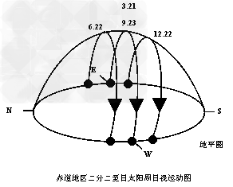
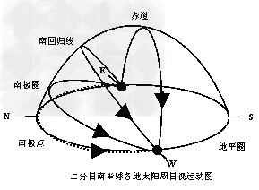
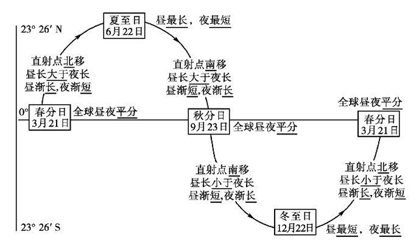

1、引起正午太阳高度的变化:
（1）太阳光线对于地平面的交角，叫做太阳高度角，简称太阳高度（用H表示）。同一时刻正午太阳高度由直射点向南北两侧递减。因此，太阳直射点的位置决定着一个地方的正午太阳高度的大小。在太阳直射点上，太阳高度为90°，在晨昏线上，太阳高度是0°。
（2）正午太阳高度变化的原因：由于黄赤交角的存在，太阳直射点的南北移动，引起正午太阳高度的变化。
（3）正午太阳高度的变化规律：正午太阳高度就是一日内最大的太阳高度，它的大小随纬度不同和季节变化而有规律地变化。
正午太阳高度的变化规律——按节气：
| 节气 | 太阳直射点 | 正午太阳高度的纬度变化 |
| 春分 | 赤道 | 赤道正午太阳高度为90°，由赤道向南北两极递减 |
| 夏至 | 北回归线 | 北回归线正午太阳高度为90°，由北回归线向南北两侧递减 |
| 秋分 | 赤道 | 赤道正午太阳高度为90°，由赤道向南北两极递减 |
| 冬至 | 南回归线 | 南回归线正午太阳高度为90°，由南回归线向南北两侧递减 |
| 归纳 | 太阳直射点所在纬度正午太阳高度为90°，距离太阳直射点所在纬线越近，正午太阳高度角越大，越远则正午太阳高度角越小 | |
正午太阳高度的变化规律——按纬度：
| 纬度地带 | 正午太阳高度的变化 |
| 北回归线及其以北地区 | 北半球冬至日后逐渐增大，北半球夏至日达到一年中最大值，然后又逐渐缩小，到北半球冬至日达到一年中最小值 |
| 南北回归线之间的地区 | 一年中有两次太阳直射，直射时正午太阳高度最大 |
| 南北回归线上 | 一年中有一次太阳直射，直射时正午太阳高度最大 |
| 南回归线及其以南地区 | 北半球冬至日达到一年中最大值，然后又逐渐缩小，到北半球夏至日达到一年中最小值 |
2、昼夜长短随纬度和季节变化：
地球昼半球和夜半球的分界线叫晨昏线（圈）。晨昏线把所经过的纬线分割成昼弧和夜弧。由于黄赤交角的存在，除二分日时晨昏线通过两极并平分所有纬线圈外，其它时间，每一纬线圈都被分割成不等长的昼弧和夜弧两部分（赤道除外）。地球自转一周，如果所经历的昼弧长，则白天长；夜弧长，则白昼短。昼夜长短随纬度和季节变化的规律见下表：
3、四季更替：
（1）从天文四季：夏季就是一年中白昼最长、正午太阳高度最高的季节。以24节气中的立春（2月4日或5日）、立夏（5月5日或6日）、立秋（8月7日或8日）、立冬（11月7日或8日）为起点。地球在公转轨道上的运行会产生天气和季节的有规律变化，传统农业中农民依此进行农业生产，有如：“谷雨前后种瓜点豆”的谚语。
黄赤交角是影响天文四季的直接原因。这是因为：正午太阳高度随纬度分布是：低纬大而高纬小，春秋二分，从赤道向两极递减；夏至日，从北回归线向南北两侧递减；冬至日，从南回归线向南北两侧递减。随季节变化是：北回归线以北，夏至日前后正午太阳高度达最大值，冬至日前后达最小值。南回归线以南则相反。南北回归线之间地带，太阳每年直射两次。
（2）气候四季包含的月份。春（3、4、5月）、夏（6、7、8月）、秋（9、10、11月）、冬（12、1、2月）。
（3）西方四季：春分、夏至、秋分、冬至为起点。比我国天文四季晚一个半月。
4、五带划分：
以地表获得太阳热量的多少来划分热带、温带、寒带。
热带：南北回归线之间有太阳直射机会，接受太阳辐射最多。
温带：回归线与极圈之间，受热适中，四季明显。
寒带：极圈与极点之间，太阳高度角低，有极昼、极夜现象。
地球公转与直射点移动、正午太阳高度、昼夜长短的季节变化关系。
重点详解（一）——正午太阳高度的应用：
1、正午太阳高度的计算：某地正午太阳高度的大小，可以用下面的公式来计算：H＝90°－|φ－δ|。其中H为正午太阳高度数，φ为当地地理纬度，永远取正值，δ为直射点的纬度，当地夏半年取正值，冬半年取负值。在实际的解题中，许多时候并不需要运用此公式。由于在某地点正午太阳高度与直射点太阳高度差值等于它们的纬度差，所以利用下面公式计算更为方便；某地正午太阳高度角H＝90°－δ，其中δ为某地与太阳直射点的纬度差。
2、正午太阳高度变化规律的应用：
（1）确定地方时
当某地太阳高度达一天中最大值时，就是一天的正午时刻，此时当地的地方时是12时。
（2）判断所在地区的纬度
当太阳直射点位置一定时，如果我们能够知道当地的正午太阳高度，就可以根据“某地与太阳直射点相差多少纬度，正午太阳高度就相差多少度”的规律，求出当地的地理纬度。
（3）确定房屋的朝向
为了获得最充足的太阳光照，各地房屋的朝向与正午太阳所在的位置有关。
北回归线以北的地区，正午太阳位于南方，房屋朝南；南回归线以南的地区，正午太阳位于北方，房屋朝北。
（4）判断日影长短及方向
太阳直射点上，物体的影子缩短为0；正午太阳高度越大，日影越短；反之，日影越长。正午是一天中日影最短的时刻。
日影永远朝向背离太阳的方向，北回归线以北的地区，正午的日影全年朝向正北(北极点除外)，冬至日日影最长，夏至日最短；南回归线以南的地区，正午的日影全年朝向正南(南极点除外)，夏至日日影最长，冬至日最短；南北回归线之间的地区，正午日影夏至日朝向正南，冬至日朝向正北；直射时日影最短(等于0)
（5）计算楼间距、楼高
为了更好地保持各楼层都有良好的采光，楼与楼之间应当保持适当距离。
纬度较低的地区，楼距较小，纬度较高的地区楼距较大。以我国为例，见下图，南楼高度为h，该地冬至日正午太阳高度为H，则最小楼间距L＝h·cotH。
（6）计算热水器的安装角度
太阳能热水器集热面与太阳光线垂直；太阳能热水器集热面与地面的夹角同正午太阳高度互余。
为了更好地利用太阳能，应不断调整太阳能热水器与楼顶平面之间的倾角，使太阳光与受热板之间成直角。其倾角和正午太阳高度角的关系为α＋h＝90°(如图所示)。
注：
正午太阳高度与太阳直射点的关系
①正午太阳高度一定是指当地正午12点整的太阳高度，但是太阳不一定直射当地所在的纬度。
②太阳直射点必须是在纬度23.5°之间来回移动，纬度大于23.5°的地方太阳不能直射，但有正午太阳高度，只是其正午太阳高度一定小于90°。
③正午太阳高度的计算及其应用都与当地纬度和太阳直射点的纬度有关，二者缺一不可。
④太阳直射点以一个回归年为周期在南北回归线及其之间来回移动，故直射点大约每个月移动纬度为8°，每移动1°大约需要4天。
⑤正午太阳高度的变化规律与太阳直射点密切相关，距离太阳直射点越近，正午太阳高度越大；距离太阳直射点越远，正午太阳高度越小。
重点详解（二）——正午太阳高度的应用：
在太阳光的照射下，物体总会有自己的影子（除太阳直射的情况），影子的朝向与太阳方位相关。同一时间在不同纬度地区，太阳方位是不同的；同一纬度地区在不同时间，太阳方位也是不一样的。因而影子的朝向存在日变化和季节变化。
（1）同一地区在不同节气日影的朝向（以北半球为例）
①赤道地区“二分二至”日日影的朝向在赤道地区，一年四季太阳都是垂直升起而又垂直落下，且太阳升落方位的纬度就是太阳直射的纬度。
| 赤道 | 日出方位 | 日影朝向 | 正午太阳方位 | 日影朝向 | 日落方位 | 日影朝向 |
| 夏至 | 东北 | 西南 | 正北66°34′ | 正南 | 西北 | 东南 |
| 春秋分 | 正东 | 正西 | 天顶90° | 无 | 正西 | 正东 |
| 冬至 | 东南 | 西北 | 正南66°34′ | 正北 | 西南 | 东北 |
| 北回归线 | 日出方位 | 日影朝向 | 正午太阳方位 | 日影朝向 | 日落方位 | 日影朝向 |
| 夏至 | 东北 | 西南 | 天顶90° | 无 | 西北 | 东南 |
| 春秋分 | 正东 | 正西 | 正南66°34′ | 正北 | 正西 | 正东 |
| 冬至 | 东南 | 西北 | 正南43°08′ | 正北 | 西南 | 东北 |
| 北极圈 | 日出方位 | 日影朝向 | 正午太阳方位 | 日影朝向 | 日落方位 | 日影朝向 |
| 夏至 | 正北 | 正南 | 正南46°52′ | 正北 | 正北 | 正南 |
| 春秋分 | 正东 | 正西 | 正南23°26′ | 正北 | 正西 | 正东 |
| 冬至 | 极夜无日出日落 | |||||
| 北极点 | 日出方位 | 日影朝向 | 正午太阳方位 | 日影朝向 | 日落方位 | 日影朝向 |
| 夏至 | 无 | 正南 | 正南23°26′ | 正南 | 无 | 正南 |
| 春秋分 | 正南 | 正南 | 正南0° | 正南 | 正南 | 正南 |
| 冬至 | 极夜无日出日落 | |||||
（2）同一节气不同地区的日影的朝向（以南半球为例）
①“二分日”南半球不同地区日影的朝向春分秋分日太阳直射赤道，全球昼夜平分，不同地区日出、日落的方位都是正东升、正西落（除南极点），并且随纬度的升高太阳视平圈与地平圈所成二面角由90°变为0°。即太阳高度由90°减为0°

| 春分秋分 | 日出方位 | 日影朝向 | 正午太阳方位 | 日影朝向 | 日落方位 | 日影朝向 |
| 赤道 | 正东 | 正西 | 天顶90° | 无 | 正西 | 正东 |
| 南回归线 | 正东 | 正西 | 正北66°34′ | 正南 | 正西 | 正东 |
| 南极圈 | 正东 | 正西 | 正北23°26′ | 正南 | 正西 | 正东 |
| 南极点 | 正北 | 正北 | 正北0° | 正北 | 正北 | 正北 |
| 夏至日 | 日出方位 | 日影朝向 | 正午太阳方位 | 日影朝向 | 日落方位 | 日影朝向 |
| 赤道 | 东北 | 西南 | 正北66°34′ | 正南 | 西北 | 东南 |
| 南回归线 | 东北 | 西南 | 正北43°08′ | 正南 | 西北 | 东南 |
| 南极圈 | 极夜无日出日落 | 极夜无日出日落 | 极夜无日出日落 | 极夜无日出日落 | 极夜无日出日落 | 极夜无日出日落 |
| 南极点 | 极夜无日出日落 | 极夜无日出日落 | 极夜无日出日落 | 极夜无日出日落 | 极夜无日出日落 | 极夜无日出日落 |
| 冬至日 | 日出方位 | 日影朝向 | 正午太阳方位 | 日影朝向 | 日落方位 | 日影朝向 |
| 赤道 | 东南 | 西北 | 正南66°34′ | 正北 | 西南 | 东北 |
| 南回归线 | 东南 | 西北 | 天顶90° | 无 | 西南 | 东北 |
| 南极圈 | 正南 | 正北 | 正北46°52′ | 正南 | 正南 | 正北 |
| 南极点 | 无日出日落，太阳都位于正北23°26′，日影都朝向正北 | |||||
- 昼夜长短的变化:以北半球为例：

 以上内容为魔
以上内容为魔